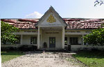

Svay Rieng situated in the southeastern corner of Cambodia, is a province distinguished by its profound connection to both the land and its historical roots. The province’s flat, fertile terrain is predominantly used for agriculture, with rice being the primary crop. This agricultural focus not only supports the local economy but also defines the region’s rural character, with expansive rice paddies stretching across the landscape. Traditional farming methods are still widely practiced, reflecting the province's deep agricultural heritage and the importance of rice cultivation in local life.
The historical significance of Svay Rieng is evident through its array of ancient sites and temples. One notable site is the ancient temple of Wat Ba Phnom, which, while not as renowned as Angkor Wat, provides a glimpse into the Khmer Empire's architectural and artistic achievements. The temple features classic Khmer design elements, including intricately carved sandstone and detailed bas-reliefs that depict Hindu deities and mythological scenes. These historical landmarks are often situated within serene, natural settings that enhance their historical and spiritual significance.
Culturally, Svay Rieng is vibrant and rich in traditional Cambodian customs. The province is known for its lively local festivals and cultural events that showcase the traditional music, dance, and ceremonies of Cambodia. Festivals often include elaborate performances, traditional dress, and communal gatherings, offering visitors an authentic experience of Cambodian culture. These celebrations are deeply rooted in local traditions and are a key part of community life in Svay Rieng.
In addition to its cultural and historical aspects, Svay Rieng boasts natural beauty that attracts visitors seeking tranquility and scenic landscapes. The province’s picturesque environment includes lush rice fields, serene waterways, and traditional village scenes. This natural setting provides a peaceful retreat from the hustle and bustle of urban areas, allowing visitors to experience the calm and simplicity of rural Cambodian life.
Svay Rieng also serves as a gateway to exploring Cambodia’s broader historical and cultural landscape. Its proximity to other significant locations in southeastern Cambodia allows for easy access to additional historical sites and cultural experiences. The province's combination of agricultural richness, historical depth, cultural vibrancy, and natural beauty makes it a compelling destination for those interested in exploring the multifaceted aspects of Cambodian life. Whether it’s delving into ancient temples, participating in local festivals, or enjoying the serene countryside, Svay Rieng offers a well-rounded and enriching experience.

svay rieng town

Situated in the heart of Svay Rieng's provincial capital, the Svay Rieng Provincial Museum stands as a vital repository of the region’s cultural and historical heritage. The museum’s collection includes a wide array of artifacts that span from ancient Khmer sculptures and inscriptions to traditional everyday items that reflect the local way of life. Visitors can explore exhibits detailing the artistic achievements of the Khmer Empire, as well as displays on regional customs, craftsmanship, and historical developments. The museum provides a comprehensive overview of Svay Rieng's past and its significance within the broader context of Cambodian history. By offering insights into both ancient and contemporary aspects of the region, the museum plays a crucial role in preserving and interpreting Svay Rieng’s rich cultural heritage.
 The Bavet , located on the bustling border between Cambodia and Vietnam, is a vibrant town that offers a stark contrast to the quiet rural landscapes of the surrounding province. Known primarily as a commercial hub, Bavet has rapidly developed into a lively town with a unique blend of cultures. The town’s streets are lined with a mix of modern buildings and traditional shops, where the influence of both Cambodian and Vietnamese cultures is evident. One of Bavet’s main attractions is its array of casinos, which draw visitors from both sides of the border. These casinos, with their bright lights and lively atmosphere, offer a glimpse into the town’s fast-paced lifestyle. Beyond the casinos, Bavet is also home to bustling markets where vendors sell everything from fresh produce to electronics, making it a shopping destination for locals and travelers alike. The town’s strategic location has made it a key point of entry and exit between the two countries, and the blend of cultures here is palpable in the food, language, and daily interactions. For those interested in experiencing the dynamic energy of a border town, Bavet provides an intriguing mix of modernity and tradition.
The Bavet , located on the bustling border between Cambodia and Vietnam, is a vibrant town that offers a stark contrast to the quiet rural landscapes of the surrounding province. Known primarily as a commercial hub, Bavet has rapidly developed into a lively town with a unique blend of cultures. The town’s streets are lined with a mix of modern buildings and traditional shops, where the influence of both Cambodian and Vietnamese cultures is evident. One of Bavet’s main attractions is its array of casinos, which draw visitors from both sides of the border. These casinos, with their bright lights and lively atmosphere, offer a glimpse into the town’s fast-paced lifestyle. Beyond the casinos, Bavet is also home to bustling markets where vendors sell everything from fresh produce to electronics, making it a shopping destination for locals and travelers alike. The town’s strategic location has made it a key point of entry and exit between the two countries, and the blend of cultures here is palpable in the food, language, and daily interactions. For those interested in experiencing the dynamic energy of a border town, Bavet provides an intriguing mix of modernity and tradition.
 Romeas Haek is a district in Svay Rieng Province that offers a glimpse into the rural life of Cambodia, far removed from the bustle of more developed areas. The landscape here is dominated by rice paddies, small villages, and gently rolling hills, creating a picturesque scene that feels timeless. As you journey through the district, you'll encounter traditional stilt houses where families engage in daily activities like farming and weaving. The district is home to several small pagodas, each a focal point for the local community. These pagodas may not be as grand as those in larger cities, but they carry a deep sense of spirituality and tradition. Visitors to Romeas Haek can immerse themselves in the rhythms of rural life, perhaps participating in a local ceremony or simply enjoying the peace and quiet of the countryside. The simplicity and beauty of this district offer a refreshing escape and a deeper understanding of Cambodia's agrarian roots.
Romeas Haek is a district in Svay Rieng Province that offers a glimpse into the rural life of Cambodia, far removed from the bustle of more developed areas. The landscape here is dominated by rice paddies, small villages, and gently rolling hills, creating a picturesque scene that feels timeless. As you journey through the district, you'll encounter traditional stilt houses where families engage in daily activities like farming and weaving. The district is home to several small pagodas, each a focal point for the local community. These pagodas may not be as grand as those in larger cities, but they carry a deep sense of spirituality and tradition. Visitors to Romeas Haek can immerse themselves in the rhythms of rural life, perhaps participating in a local ceremony or simply enjoying the peace and quiet of the countryside. The simplicity and beauty of this district offer a refreshing escape and a deeper understanding of Cambodia's agrarian roots.